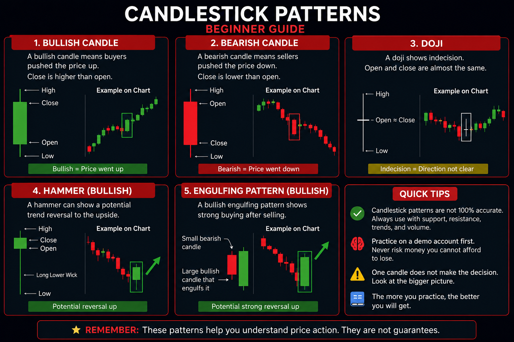

How To Read Stock Charts
Example Stock Chart

This example chart shows how stock prices move over time. Notice how the price rises, falls, and reacts at support and resistance levels.
Candlestick Pattern Guide

This guide shows common candlestick patterns beginners should learn. Candlesticks can help traders understand buying pressure, selling pressure, indecision, and possible trend changes.
Price Line
The price line shows how the stock price moves over time. If the line goes up, the price increased. If it goes down, the price dropped.
Candlesticks
Candlesticks show the open price, close price, highest price, and lowest price during a certain time period.
A green candle usually means the price closed higher than it opened. A red candle usually means the price closed lower than it opened.
Bullish vs Bearish Candles
A bullish candle means buyers had more control during that time period. A bearish candle means sellers had more control.
One candle alone does not guarantee what happens next. Beginners should look at the bigger trend, support, resistance, and volume.
Volume
Volume shows how many shares were traded. High volume can mean more people are interested in that stock.
If price moves up with strong volume, traders may see that as stronger buying interest. If price moves down with strong volume, traders may see that as stronger selling interest.
Support
Support is a price area where a stock has had trouble falling below before. It can act like a floor where buyers may step in.
Resistance
Resistance is a price area where a stock has had trouble going above before. It can act like a ceiling where sellers may step in.
How Support and Resistance Work Together
Traders often watch support and resistance to plan practice entries and exits. For example, a beginner might watch if price bounces near support or struggles near resistance.
These areas are not perfect. Price can break through support or resistance, so risk management is always important.
Quick Chart Reading Tips
📈 Higher highs can indicate an uptrend.
📉 Lower lows can indicate a downtrend.
📊 Volume helps confirm price movement.
🛑 Support and resistance are areas traders often watch.
🕯️ Candlesticks show buyer and seller behavior.
📝 Always practice reading charts before using real money.